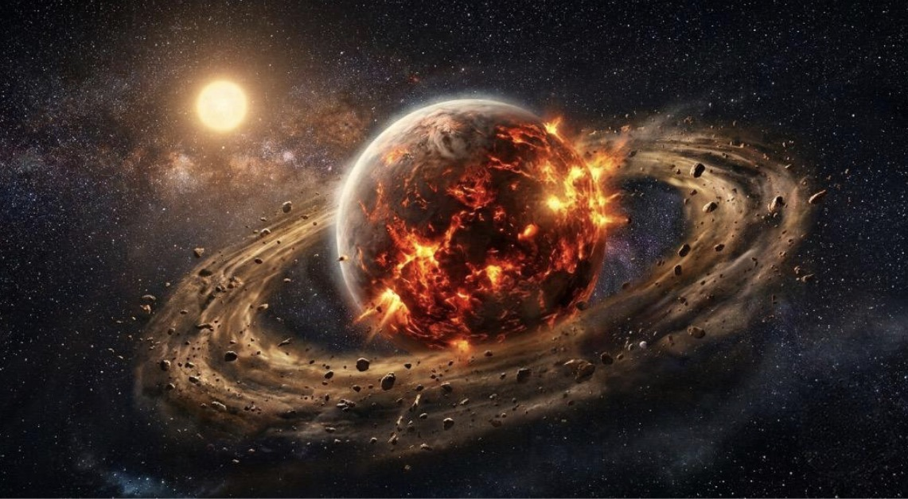
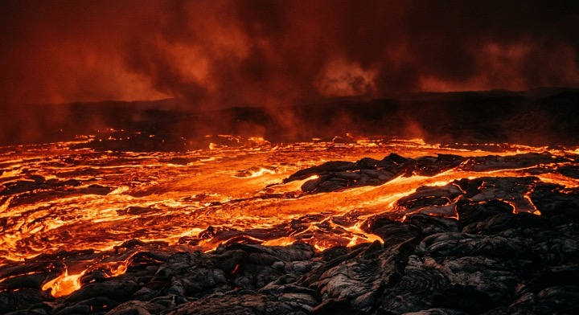
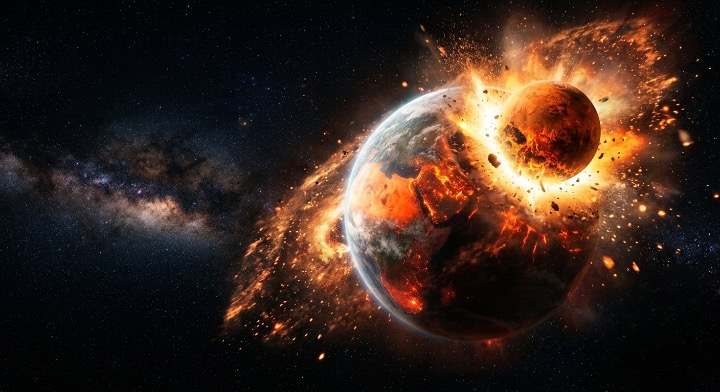
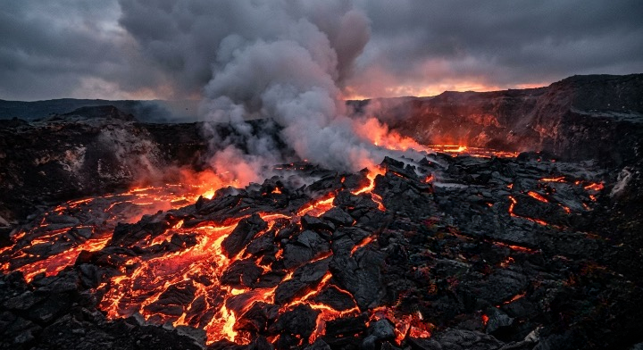
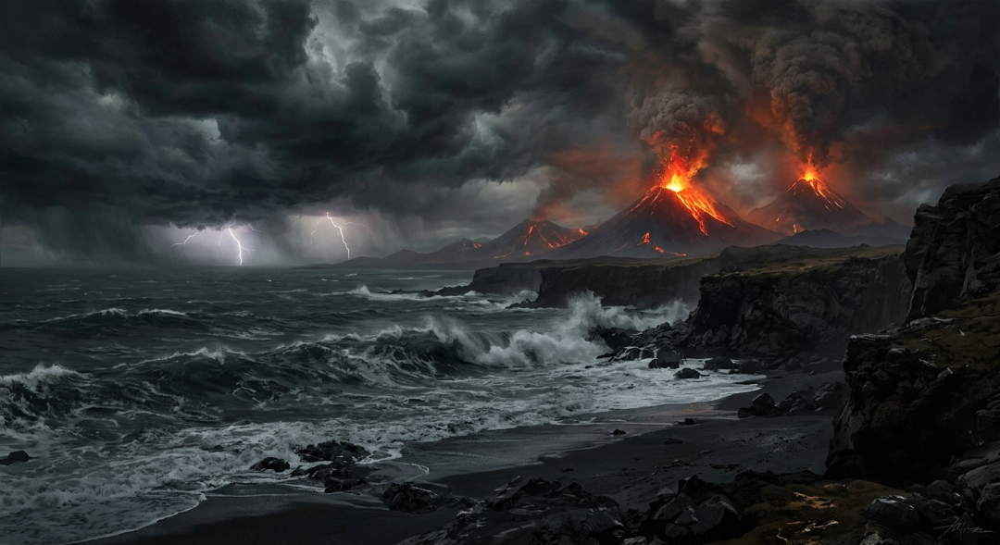

Народження з хаосу (4.56 - 4.51 мільярдів років тому)
Усе почалося приблизно 4.56 мільярда років тому в розпеченому, хаотичному колі молодої Сонячної системи, де навколо новонародженого Сонця обертався гігантський диск із залишків космічної матерії. Величезна хмара з надважкого космічного пилу, газів та кам'яних уламків різного розміру почала стрімко стискатися та ущільнюватися під дією наростаючої власної гравітації. Цей тривалий та руйнівний процес, відомий у науці як акреція, змушував незліченну кількість гігантських метеоритів, астероїдів та первинних планетезималей безперервно, з колосальною швидкістю стикатися між собою, поступово нарощуючи масу та формуючи грубу основу нашої майбутньої планети.
Кожне таке зіткнення виділяло колосальну кількість кінетичної енергії, яка миттєво перетворювалася на тепло. Через відсутність атмосфери це тепло не могло швидко розсіюватися в космосі, що призвело до поступового розігріву надр планети. Молода Земля ще не мала твердої поверхні; вона являла собою нестабільну, вируючу кулю з напіврідкої породи.
Поступово під дією гравітаційного тиску важкі хімічні елементи, такі як залізо та нікель, почали опускатися до самого центру нової планети. Цей процес гравітаційної диференціації заклав фундамент для формування металевого ядра Землі. Легші силікатні породи виштовхувалися наверх, утворюючи первісну розплавлену мантію, що безперервно вирувала.

Первісна акреція
Процес злиття космічних уламків та планетезималей під дією гравітації, що дав початок формуванню масивної розплавленої кулі.
Океан магми (4.51 - 4.45 мільярдів років тому)
Невдовзі після завершення основної фази акреції Земля остаточно перетворилася на справжнє космічне пекло, де вся без винятку видима поверхня була покрита суцільним, безкрайнім океаном рідкої та киплячої магми. Середня температура на планеті в цей період впевнено перевищувала 2000 градусів за Цельсієм, що повністю виключало навіть теоретичну можливість існування будь-якої стабільної твердої скелі чи рідкої води. Величезні вогняні хвилі розплавленого каменю та рідкого базальту циркулювали всією планетою через потужні конвекційні потоки, що піднімалися з розпечених глибин мантії.
Цей глобальний магматичний океан сягав углиб на сотні кілометрів, створюючи динамічне, екстремальне середовище, де щомиті відбувалися надскладні та бурхливі хімічні реакції між різними мінеральними сполуками. З розпечених надр планети назовні безперервно виділялися летючі гази, які через силу гравітації утримувалися навколо і формували першу, надзвичайно токсичну та щільну атмосферу, що складалася з парів металів, чадного газу, діоксиду вуглецю та сполук сірки. Небо над планетою через це мало постійний, гнітючий брудно-червоний або кривавий відтінок через густий смог, який ніколи не розсіювався.
Попри те, що цей період здається абсолютно мертвим і ворожим для будь-якої концепції життя, саме глобальний океан магми дозволив планеті ідеально перемішати, розподілити та диференціювати всі свої хімічні елементи. Цей етап розплавлення був абсолютно необхідний для того, щоб легші мінерали, сполуки кремнію та гранітні компоненти згодом змогли остаточно піднятися на поверхню і створити майбутню земну кору. Космічний вогонь поступово затихав, і планета повільно готувалася до свого найпершого, надзвичайно тривалого в часі серйозного охолодження.
>
Океан рідкого каменю
Період, коли температура поверхні перевищувала 2000°C, а вся планета була вкрита киплячим шаром силікатного розплаву.
Удар, який змінив усе (4.45 мільярдів років тому)
Найбільш руйнівна, катастрофічна та доленосна подія в усій історії молодої Землі відбулася приблизно через 100 мільйонів років після початку її формування. Гіпотетична блукаюча планета під назвою Тейя, яка за своїми розмірами була приблизно рівною сучасному Марсу, рухалася по нестабільній перехресній орбіті і на колосальній швидкості врізалася в прото-Землю. Цей страшний косий удар неймовірної сили майже повністю, вщент знищив саму Тейю, а також буквально здер, випарував та викинув у відкритий космос значну частину молодої земної мантії.
Неймовірна енергія цього космічного зіткнення була настільки потужною, що обидва небесні тіла фактично миттєво розплавилися, частково змішалися і злилися в нову, більшу та важчу єдину планету. Колосальна, невимовна кількість уламків застиглої породи, випаруваного заліза та розпечених мінералів була викинута на навколоземну орбіту силою вибуху. Цей розпечений матеріал під дією відцентрової сили утворив гігантське, щільне вогняне кільце навколо Землі, яке оберталося з неймовірною швидкістю і світилося в темряві космосу.
З плином часу внутрішня гравітація змусила ці розрізнені орбітальні уламки та залишки Тейї знову поступово зближуватися, стискатися та збиратися разом, що врешті-решт призвело до швидкого народження нашого єдиного природного супутника — Місяця. Наслідки цього епічного удару назавжди змінили подальшу траєкторію розвитку Землі: планета отримала свій унікальний нахил осі обертання (близько 23.5 градусів), який сьогодні забезпечує зміну пір року, а також значно прискорила своє обертання навколо власної осі.

Катастрофа Тейї
Космічне зіткнення, яке розплавило планету, подарувало Землі нахил осі обертання та сформувало первинне кільце уламків, з якого народився Місяць.
Застигання хаосу (4.45 - 4.40 мільярдів років тому)
Після поступового затихання масштабних космічних бомбардувань та стабілізації системи після катастрофи з Тейєю, Земля нарешті почала дуже повільно віддавати своє надлишкове тепло в леденящий космічний простір. Величезний океан магми, що покривав планету, почав покриватися першими, дуже крихкими, тонкими плитами та острівцями застиглої темної породи. Ці перші нестабільні клаптики твердої землі складалися переважно з темного важкого базальту і кожні кілька годин руйнувалися, тонули та знову плавилися під впливом нових хвиль лави, потужних землетрусів та тектонічних зсувів.
Процес глобального охолодження поверхні не був швидким чи лінійним: розплавлені, киплячі надра планети постійно зсередини проривали цю тонку кору, що зароджувалася, створюючи на поверхні тисячі активних супервулканів та гігантських тріщин. Вони без зупину викидали в первинну атмосферу колосальні, мільярдні об'єми гарячої водяної пари, азоту, сірки та різноманітних парникових газів, що створювало ефект тиску. Проте, з кожним новим мільйоном років, у міру загального охолодження космосу навколо, тверді базальтові та коматиїтові щити ставали все товстішими, міцнішими та стабільнішими.
Саме в цей ранній період на планеті почали повільно закладатися найперші, примітивні механізми майбутніх тектонічних процесів та руху літосфери. Важкі застиглі плити під власною вагою опускалися назад у розплавлену мантію, там знову плавилися від високих температур і згодом виходили на поверхню у вигляді оновленої гранітної та базальтової породи. Формування цієї первинної кори стало абсолютно критичним кроком для еволюції Землі, адже без надійної та твердої мінеральної основи планета ніколи б фізично не змогла утримати на своїй поверхні майбутні океани рідкої води.

Базальтові щити
Початок затвердіння поверхні. Формування перших крихких мінеральних плит, що утворювали тонку кору поверх киплячих надр мантії.
Поява первинної атмосфери (4.40 - 4.00 мільярдів років тому)
Паралельно з поступовим охолодженням і затвердінням кам'яної кори відбувався масштабний процес активної та безперервної дегазації мантії через мільйони відкритих вулканічних жерл по всій планеті. Гаряча водяна пара, що виділялася з надр у кількості мільярдів тонн щодня, стрімко піднімалася у верхні, холодніші шари навколоземного простору, де змішувалася з чадним газом, метаном, аміаком та сполуками хлору й сірки. Поступово, за рахунок утримання цих газів гравітаційним полем, навколо Землі утворився надзвичайно густий, щільний і неймовірно важкий атмосферний шар, що нагадував кокон.
Ця первинна атмосфера Катархейського еону не містила абсолютно жодного відсотка вільного, звичного нам кисню, тому небо планети мало постійний брудний сіро-помаранчевий або жовтуватий колір через високу концентрацію сірки та метану. Атмосферний тиск на поверхні був у десятки разів більшим за сучасний, буквально притискаючи все до застигаючого базальту. Величезні, титанічні хмари з водяної пари повністю, стовідсотково закривали планету від прямих променів слабкого молодого Сонця, створюючи потужний парниковий ефект, який довго утримував внутрішнє тепло.
Коли загальна температура у верхніх шарах цієї густої, насиченої хмарами атмосфери нарешті впала нижче критичної точки кипіння води, на планеті почалася найбільша конденсація вологи в її історії. Хмари стали настільки важкими та перенасиченими, що на гарячу, щойно застиглу базальтову поверхню Землі з гуркотом почали падати перші краплі безперервного, масштабного кислотного дощу. Це глобальне випадання опадів тривало століттями, поклавши край епосі чистого вогню та зробивши перший рішучий крок до появи первісних гарячих морів та океанів.

Токсична дегазація
Формування надгустої атмосфери з водяної пари та парникових газів без кисню, яка згодом спровокувала перші глобальні дощі на планеті.